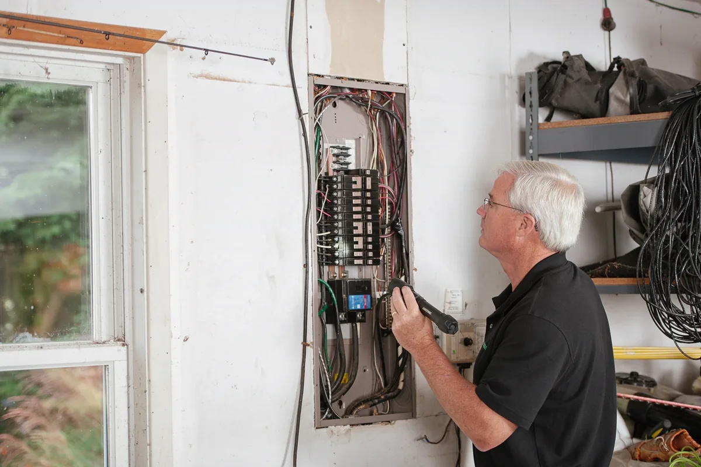

Manutenção reativa é sempre mais cara
Condomínio que só age quando algo quebra paga três vezes: paga o conserto emergencial, paga o dano que a falha causou e paga o preço de quem foi contratado sem tempo para negociar. A ABNT NBR 5674 existe para inverter essa lógica — ela organiza a manutenção em plano, periodicidade e registro.
Trabalhamos ao lado do síndico e da administradora como responsável técnico: elaboramos o plano, fazemos as inspeções, emitimos os laudos, avaliamos orçamentos de terceiros e executamos as adequações que exigem engenharia.
Atendemos condomínios residenciais e comerciais em Vitória, Vila Velha, Serra, Cariacica, Viana e Guarapari.
Sistemas cobertos pelo plano
Estrutura, fachada e cobertura
Inspeção de elementos estruturais, fissuras, revestimento de fachada, impermeabilização, telhado, calhas e rufos. Quando há revestimento com risco de desprendimento, o caminho é o mapeamento descrito em recuperação de fachadas; se houver deterioração de concreto, o diagnóstico segue em patologias e corrosão estrutural.
Instalações elétricas e SPDA
Quadros, disjuntores, aterramento, termografia de painéis, iluminação de emergência, grupo gerador e sistema de proteção contra descargas atmosféricas. Painel com conexão frouxa é causa comum de incêndio em prédio, e a termografia encontra o ponto quente antes disso.
Hidráulica, reservatórios e bombas
Reservatórios (estanqueidade, tampa, respiro, limpeza semestral), bombas de recalque e de drenagem, pressurização, prumadas, ralos e drenagem de garagem. Vazamento em prumada embutida é o defeito que mais gera briga entre unidades — e o mais fácil de localizar com inspeção antes que apareça na parede do vizinho.
Combate a incêndio
Extintores, hidrantes, mangueiras com teste hidrostático, sprinklers, detecção e alarme, iluminação de emergência, sinalização e rotas de fuga. Escopo detalhado em combate a incêndio e em instalação e regularização de sistema de incêndio, inclusive para a vistoria do Corpo de Bombeiros.
Áreas de lazer e acessibilidade
Playground, academia, piscina, quadra, salão e churrasqueira, além da acessibilidade das áreas comuns conforme a NBR 9050.
Climatização, exaustão e gás
Sistemas de climatização de áreas comuns — com PMOC quando aplicável —, exaustão de garagem e de escadas, ventilação de casa de máquinas e instalação de gás. Cozinha coletiva e churrasqueira com coifa entram no escopo de exaustão e coifas.
Elevadores, portões e automação
Acompanhamento técnico dos contratos de manutenção de elevador, portões automáticos, controle de acesso e CFTV. Não substituímos a empresa conservadora: fiscalizamos o que ela entrega, que é justamente o que o síndico não tem como conferir sozinho.

Periodicidades típicas de um plano predial
| Item | Periodicidade usual |
|---|---|
| Inspeção visual das áreas comuns | Mensal |
| Limpeza de reservatórios | Semestral |
| Teste de bombas e alternância | Mensal |
| Recarga e inspeção de extintores | Anual, com verificação mensal |
| Teste hidrostático de mangueiras | Anual |
| Teste de iluminação de emergência | Mensal |
| Termografia de quadros elétricos | Anual |
| Medição de aterramento e SPDA | Anual |
| Inspeção técnica de playground | Anual, com verificação de rotina |
| Inspeção de fachada | Anual, com vistoria detalhada a cada poucos anos |
| Inspeção predial completa com laudo | Anual ou conforme o plano |
As periodicidades acima são referência de plano. As frequências que valem são as do manual da edificação, das normas específicas de cada sistema e das exigências legais aplicáveis.
O que o síndico ganha com responsável técnico
- Defesa documentada: plano, laudos e registros mostram que a manutenção existia e era executada;
- Orçamento comparável: escopo técnico escrito faz três propostas ficarem realmente comparáveis;
- Fiscalização de prestador: alguém conferindo se o que foi contratado foi entregue;
- Previsão financeira: intervenções grandes entram no planejamento e no fundo de reserva;
- Argumento em assembleia: laudo técnico decide discussão que opinião não decide;
- Prioridade por risco: o que ameaça segurança vem antes do que incomoda esteticamente.
Perguntas frequentes sobre manutenção predial
O que é o plano de manutenção da NBR 5674?
É o documento que organiza a manutenção da edificação: relaciona todos os sistemas do prédio, define o que deve ser verificado em cada um, com que periodicidade, por quem e com qual registro. A NBR 5674 trata da gestão da manutenção; a NBR 14037 trata do manual de uso, operação e manutenção que a construtora deve entregar. Na prática, o plano transforma manutenção reativa — consertar o que quebrou — em manutenção programada, que é sempre mais barata e evita interdição.
Qual a responsabilidade do síndico sobre a manutenção?
O síndico responde pela conservação das áreas comuns e pela segurança de quem circula por elas. Em acidente — queda de revestimento de fachada, choque elétrico, falha de elevador, incêndio com sistema fora de operação, acidente no playground —, apura-se o que era conhecido, o que foi feito e o que ficou registrado. Plano de manutenção com registro de execução é a defesa concreta do síndico e da administradora; ausência de registro costuma ser tratada como omissão.
Condomínio precisa de engenheiro fixo?
Não precisa de engenheiro em tempo integral, mas precisa de responsável técnico para as atividades que exigem habilitação: elaboração do plano de manutenção, inspeção predial, laudos de instalações, projetos de reforma, obras de fachada e adequações. O modelo mais comum é o acompanhamento periódico — visitas programadas, laudos anuais e assessoria técnica ao síndico para avaliar orçamentos e fiscalizar prestadores.
Quais laudos um condomínio costuma precisar?
Os mais recorrentes são: inspeção predial das áreas comuns, laudo de instalações elétricas e do SPDA, laudo de fachada quando há revestimento com risco de desprendimento, laudo de acessibilidade das áreas comuns, laudo de playground, laudo de estanqueidade e limpeza de reservatório, além dos documentos do sistema de combate a incêndio para a vistoria do Corpo de Bombeiros. Quando há caldeira, gerador de vapor ou vaso de pressão na área comum, entra também a inspeção NR-13.
Como o plano ajuda a reduzir custo de condomínio?
De três formas. Primeiro, antecipa a intervenção enquanto ela é pequena: tratar cinco metros quadrados de fachada custa uma fração de tratar um pano inteiro. Segundo, permite orçar com antecedência e comparar propostas em condições iguais, em vez de contratar em regime de urgência. Terceiro, organiza a previsão de fundo de reserva, o que evita a chamada de capital extraordinária que sempre gera atrito em assembleia.
Engenharia predial na Grande Vitória
Atendimento a condomínios residenciais e comerciais nas cidades da região:
Precisa levar um plano para a assembleia?
Informe o número de unidades, a idade do prédio e o que está pendente. Retornamos com escopo e proposta.